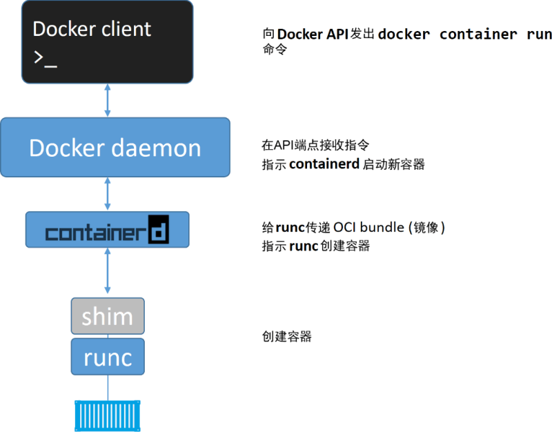

首页 > 编程笔记
Docker引擎（engine）详解
Docker 引擎是用来运行和管理容器的核心软件。通常人们会简单地将其代指为 Docker 或 Docker 平台。
如果你对 VMware 略知一二，那么可以将 Docker 引擎理解为 ESXi 的角色。
基于开放容器计划（OCI）相关标准的要求，Docker 引擎采用了模块化的设计原则，其组件是可替换的。
从多个角度来看，Docker 引擎就像汽车引擎——二者都是模块化的，并且由许多可交换的部件组成。
汽车引擎由许多专用的部件协同工作，从而使汽车可以行驶，例如进气管、节气门、气缸、火花塞、排气管等。
Docker 引擎由许多专用的工具协同工作，从而可以创建和运行容器，例如 API、执行驱动、运行时、shim 进程等。
Docker 引擎由如下主要的组件构成：Docker 客户端（Docker Client）、Docker 守护进程（Docker daemon）、containerd 以及 runc。它们共同负责容器的创建和运行。
总体逻辑如下图所示。

Docker 首次发布时，Docker 引擎由两个核心组件构成：LXC 和 Docker daemon。
Docker daemon 是单一的二进制文件，包含诸如 Docker 客户端、Docker API、容器运行时、镜像构建等。
LXC 提供了对诸如命名空间（Namespace）和控制组（CGroup）等基础工具的操作能力，它们是基于 Linux 内核的容器虚拟化技术。
下图阐释了在 Docker 旧版本中，Docker daemon、LXC 和操作系统之间的交互关系。

首先，LXC 是基于 Linux 的。这对于一个立志于跨平台的项目来说是个问题。
其次，如此核心的组件依赖于外部工具，这会给项目带来巨大风险，甚至影响其发展。
因此，Docker 公司开发了名为 Libcontainer 的自研工具，用于替代 LXC。
Libcontainer 的目标是成为与平台无关的工具，可基于不同内核为 Docker 上层提供必要的容器交互功能。
在 Docker 0.9 版本中，Libcontainer 取代 LXC 成为默认的执行驱动。
Docker 公司意识到了这些问题，开始努力着手拆解这个大而全的 Docker daemon 进程，并将其模块化。
这项任务的目标是尽可能拆解出其中的功能特性，并用小而专的工具来实现它。这些小工具可以是可替换的，也可以被第三方拿去用于构建其他工具。
这一计划遵循了在 UNIX 中得以实践并验证过的一种软件哲学：小而专的工具可以组装为大型工具。
这项拆解和重构 Docker 引擎的工作仍在进行中。不过，所有容器执行和容器运行时的代码已经完全从 daemon 中移除，并重构为小而专的工具。
目前 Docker 引擎的架构示意图如下图所示，图中有简要的描述。

镜像规范和容器运行时规范，两个规范均于 2017 年 7 月发布了 1.0 版。
Docker 公司参与了这些规范的制定工作，并贡献了许多的代码。
从 Docker 1.11 版本（2016 年初）开始，Docker 引擎尽可能实现了 OCI 的规范。例如，Docker daemon 不再包含任何容器运行时的代码——所有的容器运行代码在一个单独的 OCI 兼容层中实现。
默认情况下，Docker 使用 runc 来实现这一点。runc 是 OCI 容器运行时标准的参考实现。
如上图中的 runc 容器运行时层。runc 项目的目标之一就是与 OCI 规范保持一致。
目前 OCI 规范均为 1.0 版本，我们不希望它们频繁地迭代，毕竟稳定胜于一切。
除此之外，Docker 引擎中的 containerd 组件确保了 Docker 镜像能够以正确的 OCI Bundle 的格式传递给 runc。
其实，在 OCI 规范以 1.0 版本正式发布之前，Docker 引擎就已经遵循该规范实现了部分功能。
去粗取精，会发现 runc 实质上是一个轻量级的、针对 Libcontainer 进行了包装的命令行交互工具（Libcontainer 取代了早期 Docker 架构中的 LXC）。
runc 生来只有一个作用——创建容器，这一点它非常拿手，速度很快！不过它是一个 CLI 包装器，实质上就是一个独立的容器运行时工具。
因此直接下载它或基于源码编译二进制文件，即可拥有一个全功能的 runc。但它只是一个基础工具，并不提供类似 Docker 引擎所拥有的丰富功能。
有时也将 runc 所在的那一层称为“OCI 层”，如上图所示。关于 runc 的发布信息见 GitHub 中 opencontainers/runc 库的 release。
它的主要任务是容器的生命周期管理——start | stop | pause | rm....
containerd 在 Linux 和 Windows 中以 daemon 的方式运行，从 1.11 版本之后 Docker 就开始在 Linux 上使用它。
Docker 引擎技术栈中，containerd 位于 daemon 和 runc 所在的 OCI 层之间。Kubernetes 也可以通过 cri-containerd 使用 containerd。
如前所述，containerd 最初被设计为轻量级的小型工具，仅用于容器的生命周期管理。然而，随着时间的推移，它被赋予了更多的功能，比如镜像管理。
其原因之一在于，这样便于在其他项目中使用它。比如，在 Kubernetes 中，containerd 就是一个很受欢迎的容器运行时。
然而在 Kubernetes 这样的项目中，如果 containerd 能够完成一些诸如 push 和 pull 镜像这样的操作就更好了。
因此，如今 containerd 还能够完成一些除容器生命周期管理之外的操作。不过，所有的额外功能都是模块化的、可选的，便于自行选择所需功能。
所以，Kubernetes 这样的项目在使用 containerd 时，可以仅包含所需的功能。
containerd 是由 Docker 公司开发的，并捐献给了云原生计算基金会（Cloud Native Computing Foundation, CNCF）。2017 年 12 月发布了 1.0 版本，具体的发布信息见 GitHub 中的 containerd/ containerd 库的 releases。
常用的启动容器的方法就是使用 Docker 命令行工具。下面的
API 是在 daemon 中实现的。这套功能丰富、基于版本的 REST API 已经成为 Docker 的标志，并且被行业接受成为事实上的容器 API。
一旦 daemon 接收到创建新容器的命令，它就会向 containerd 发出调用。daemon 已经不再包含任何创建容器的代码了！
daemon 使用一种 CRUD 风格的 API，通过 gRPC 与 containerd 进行通信。
虽然名叫 containerd，但是它并不负责创建容器，而是指挥 runc 去做。
containerd 将 Docker 镜像转换为 OCI bundle，并让 runc 基于此创建一个新的容器。
然后，runc 与操作系统内核接口进行通信，基于所有必要的工具（Namespace、CGroup等）来创建容器。容器进程作为 runc 的子进程启动，启动完毕后，runc 将会退出。
至此，容器启动完毕。整个过程如下图所示。
在旧模型中，所有容器运行时的逻辑都在 daemon 中实现，启动和停止 daemon 会导致宿主机上所有运行中的容器被杀掉。
这在生产环境中是一个大问题——想一想新版 Docker 的发布频次吧！每次 daemon 的升级都会杀掉宿主机上所有的容器，这太糟了！
幸运的是，这已经不再是个问题。
前面提到，containerd 指挥 runc 来创建新容器。事实上，每次创建容器时它都会 fork 一个新的 runc 实例。
不过，一旦容器创建完毕，对应的 runc 进程就会退出。因此，即使运行上百个容器，也无须保持上百个运行中的 runc 实例。
一旦容器进程的父进程 runc 退出，相关联的 containerd-shim 进程就会成为容器的父进程。作为容器的父进程，shim 的部分职责如下。
通过在 Docker 宿主机的 Linux 系统中执行 ps 命令可以看到以上组件的进程。当然，有些进程只有在运行容器的时候才可见。
显然，随着越来越多的功能从 daemon 中拆解出来并被模块化，这一问题的答案也会发生变化。
不过，daemon 的主要功能包括镜像管理、镜像构建、REST API、身份验证、安全、核心网络以及编排。
如果你对 VMware 略知一二，那么可以将 Docker 引擎理解为 ESXi 的角色。
基于开放容器计划（OCI）相关标准的要求，Docker 引擎采用了模块化的设计原则，其组件是可替换的。
从多个角度来看，Docker 引擎就像汽车引擎——二者都是模块化的，并且由许多可交换的部件组成。
汽车引擎由许多专用的部件协同工作，从而使汽车可以行驶，例如进气管、节气门、气缸、火花塞、排气管等。
Docker 引擎由许多专用的工具协同工作，从而可以创建和运行容器，例如 API、执行驱动、运行时、shim 进程等。
Docker 引擎由如下主要的组件构成：Docker 客户端（Docker Client）、Docker 守护进程（Docker daemon）、containerd 以及 runc。它们共同负责容器的创建和运行。
总体逻辑如下图所示。
Docker 首次发布时，Docker 引擎由两个核心组件构成：LXC 和 Docker daemon。
Docker daemon 是单一的二进制文件，包含诸如 Docker 客户端、Docker API、容器运行时、镜像构建等。
LXC 提供了对诸如命名空间（Namespace）和控制组（CGroup）等基础工具的操作能力，它们是基于 Linux 内核的容器虚拟化技术。
下图阐释了在 Docker 旧版本中，Docker daemon、LXC 和操作系统之间的交互关系。
摆脱 LXC
对 LXC 的依赖自始至终都是个问题。首先，LXC 是基于 Linux 的。这对于一个立志于跨平台的项目来说是个问题。
其次，如此核心的组件依赖于外部工具，这会给项目带来巨大风险，甚至影响其发展。
因此，Docker 公司开发了名为 Libcontainer 的自研工具，用于替代 LXC。
Libcontainer 的目标是成为与平台无关的工具，可基于不同内核为 Docker 上层提供必要的容器交互功能。
在 Docker 0.9 版本中，Libcontainer 取代 LXC 成为默认的执行驱动。
摒弃大而全的 Docker daemon
随着时间的推移，Docker daemon 的整体性带来了越来越多的问题。难于变更、运行越来越慢。这并非生态（或Docker公司）所期望的。Docker 公司意识到了这些问题，开始努力着手拆解这个大而全的 Docker daemon 进程，并将其模块化。
这项任务的目标是尽可能拆解出其中的功能特性，并用小而专的工具来实现它。这些小工具可以是可替换的，也可以被第三方拿去用于构建其他工具。
这一计划遵循了在 UNIX 中得以实践并验证过的一种软件哲学：小而专的工具可以组装为大型工具。
这项拆解和重构 Docker 引擎的工作仍在进行中。不过，所有容器执行和容器运行时的代码已经完全从 daemon 中移除，并重构为小而专的工具。
目前 Docker 引擎的架构示意图如下图所示，图中有简要的描述。
开放容器计划（OCI）的影响
当 Docker 公司正在进行 Docker daemon 进程的拆解和重构的时候，OCI 也正在着手定义两个容器相关的规范（或者说标准）。镜像规范和容器运行时规范，两个规范均于 2017 年 7 月发布了 1.0 版。
Docker 公司参与了这些规范的制定工作，并贡献了许多的代码。
从 Docker 1.11 版本（2016 年初）开始，Docker 引擎尽可能实现了 OCI 的规范。例如，Docker daemon 不再包含任何容器运行时的代码——所有的容器运行代码在一个单独的 OCI 兼容层中实现。
默认情况下，Docker 使用 runc 来实现这一点。runc 是 OCI 容器运行时标准的参考实现。
如上图中的 runc 容器运行时层。runc 项目的目标之一就是与 OCI 规范保持一致。
目前 OCI 规范均为 1.0 版本，我们不希望它们频繁地迭代，毕竟稳定胜于一切。
除此之外，Docker 引擎中的 containerd 组件确保了 Docker 镜像能够以正确的 OCI Bundle 的格式传递给 runc。
其实，在 OCI 规范以 1.0 版本正式发布之前，Docker 引擎就已经遵循该规范实现了部分功能。
runc
如前所述，runc 是 OCI 容器运行时规范的参考实现。Docker 公司参与了规范的制定以及 runc 的开发。去粗取精，会发现 runc 实质上是一个轻量级的、针对 Libcontainer 进行了包装的命令行交互工具（Libcontainer 取代了早期 Docker 架构中的 LXC）。
runc 生来只有一个作用——创建容器，这一点它非常拿手，速度很快！不过它是一个 CLI 包装器，实质上就是一个独立的容器运行时工具。
因此直接下载它或基于源码编译二进制文件，即可拥有一个全功能的 runc。但它只是一个基础工具，并不提供类似 Docker 引擎所拥有的丰富功能。
有时也将 runc 所在的那一层称为“OCI 层”，如上图所示。关于 runc 的发布信息见 GitHub 中 opencontainers/runc 库的 release。
containerd
在对 Docker daemon 的功能进行拆解后，所有的容器执行逻辑被重构到一个新的名为 containerd（发音为 container-dee）的工具中。它的主要任务是容器的生命周期管理——start | stop | pause | rm....
containerd 在 Linux 和 Windows 中以 daemon 的方式运行，从 1.11 版本之后 Docker 就开始在 Linux 上使用它。
Docker 引擎技术栈中，containerd 位于 daemon 和 runc 所在的 OCI 层之间。Kubernetes 也可以通过 cri-containerd 使用 containerd。
如前所述，containerd 最初被设计为轻量级的小型工具，仅用于容器的生命周期管理。然而，随着时间的推移，它被赋予了更多的功能，比如镜像管理。
其原因之一在于，这样便于在其他项目中使用它。比如，在 Kubernetes 中，containerd 就是一个很受欢迎的容器运行时。
然而在 Kubernetes 这样的项目中，如果 containerd 能够完成一些诸如 push 和 pull 镜像这样的操作就更好了。
因此，如今 containerd 还能够完成一些除容器生命周期管理之外的操作。不过，所有的额外功能都是模块化的、可选的，便于自行选择所需功能。
所以，Kubernetes 这样的项目在使用 containerd 时，可以仅包含所需的功能。
containerd 是由 Docker 公司开发的，并捐献给了云原生计算基金会（Cloud Native Computing Foundation, CNCF）。2017 年 12 月发布了 1.0 版本，具体的发布信息见 GitHub 中的 containerd/ containerd 库的 releases。
启动一个新的容器
现在我们对 Docker 引擎已经有了一个总体认识，也了解了一些历史，下面介绍一下创建新容器的过程。常用的启动容器的方法就是使用 Docker 命令行工具。下面的
docker container run命令会基于 alpine:latest 镜像启动一个新容器。$ docker container run --name ctr1 -it alpine:latest sh
当使用 Docker 命令行工具执行如上命令时，Docker 客户端会将其转换为合适的 API 格式，并发送到正确的 API 端点。API 是在 daemon 中实现的。这套功能丰富、基于版本的 REST API 已经成为 Docker 的标志，并且被行业接受成为事实上的容器 API。
一旦 daemon 接收到创建新容器的命令，它就会向 containerd 发出调用。daemon 已经不再包含任何创建容器的代码了！
daemon 使用一种 CRUD 风格的 API，通过 gRPC 与 containerd 进行通信。
虽然名叫 containerd，但是它并不负责创建容器，而是指挥 runc 去做。
containerd 将 Docker 镜像转换为 OCI bundle，并让 runc 基于此创建一个新的容器。
然后，runc 与操作系统内核接口进行通信，基于所有必要的工具（Namespace、CGroup等）来创建容器。容器进程作为 runc 的子进程启动，启动完毕后，runc 将会退出。
至此，容器启动完毕。整个过程如下图所示。

该模型的显著优势
将所有的用于启动、管理容器的逻辑和代码从 daemon 中移除，意味着容器运行时与 Docker daemon 是解耦的，有时称之为“无守护进程的容器（daemonless container）”，如此，对 Docker daemon 的维护和升级工作不会影响到运行中的容器。在旧模型中，所有容器运行时的逻辑都在 daemon 中实现，启动和停止 daemon 会导致宿主机上所有运行中的容器被杀掉。
这在生产环境中是一个大问题——想一想新版 Docker 的发布频次吧！每次 daemon 的升级都会杀掉宿主机上所有的容器，这太糟了！
幸运的是，这已经不再是个问题。
shim
shim 是实现无 daemon 的容器（用于将运行中的容器与 daemon 解耦，以便进行 daemon 升级等操作）不可或缺的工具。前面提到，containerd 指挥 runc 来创建新容器。事实上，每次创建容器时它都会 fork 一个新的 runc 实例。
不过，一旦容器创建完毕，对应的 runc 进程就会退出。因此，即使运行上百个容器，也无须保持上百个运行中的 runc 实例。
一旦容器进程的父进程 runc 退出，相关联的 containerd-shim 进程就会成为容器的父进程。作为容器的父进程，shim 的部分职责如下。
- 保持所有 STDIN 和 STDOUT 流是开启状态，从而当 daemon 重启的时候，容器不会因为管道（pipe）的关闭而终止。
- 将容器的退出状态反馈给 daemon。
在 Linux 中的实现
在 Linux 系统中，前面谈到的组件由单独的二进制来实现，具体包括 dockerd(Docker daemon)、docker-containerd(containerd)、docker-containerd-shim (shim) 和 docker-runc (runc)。通过在 Docker 宿主机的 Linux 系统中执行 ps 命令可以看到以上组件的进程。当然，有些进程只有在运行容器的时候才可见。
daemon 的作用
当所有的执行逻辑和运行时代码都从 daemon 中剥离出来之后，问题出现了—— daemon 中还剩什么？显然，随着越来越多的功能从 daemon 中拆解出来并被模块化，这一问题的答案也会发生变化。
不过，daemon 的主要功能包括镜像管理、镜像构建、REST API、身份验证、安全、核心网络以及编排。
关注公众号「站长严长生」，在手机上阅读所有教程，随时随地都能学习。内含一款搜索神器，免费下载全网书籍和视频。

微信扫码关注公众号